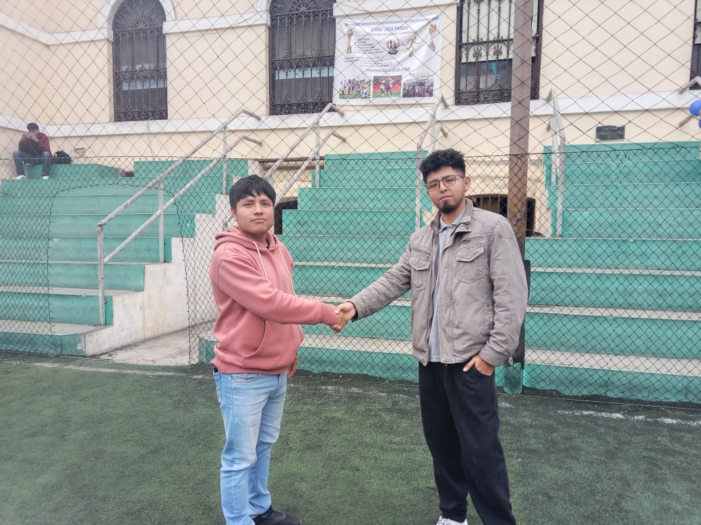

En CLÍNICA LIMASURE, creemos en una atención médica humana, accesible y con calidez. Somos una clínica comprometida con brindar servicios de salud de calidad para las familias del sur de Lima, con tecnología moderna y un enfoque centrado en el bienestar del paciente.
Misión
Ofrecer atención médica confiable y accesible, con un equipo comprometido en mejorar la calidad de vida de nuestros pacientes mediante servicios integrales, trato humano y tecnología actualizada.
Visión
Ser reconocidos como la clínica líder del sur de Lima por nuestra excelencia médica, compromiso social y mejora continua en el servicio de salud.
Valores
Compromiso con la salud
Respeto y empatía
Calidad en la atención
Innovación tecnológica
Trabajo en equipo
Equipo Fundador
Antony Celestino Abad – Cofundador y Coordinador General
Sergio Samuel Abraham Mamani Orihuela – Cofundador y Desarrollador del Proyecto

Nuestras Aspiraciones
Implementación de estándares de calidad en atención médica
Desarrollo de un sistema digital para gestión clínica
Enfocados en la mejora continua y sostenibilidad
Cuidando con propósito: Las personas al centro de todo lo que hacemos
⚕
Nos hacemos cargo
Juntos creamos nuestro futuro.
Actuamos rápidamente para dar soluciones.
Nos comprometemos, proponemos e innovamos.
Aprendemos constantemente para mejorar y superar desafíos.
🧑❤️🧑
Nos cuidamos para cuidar
El bienestar comienza con nosotros.
Promovemos activamente nuestro bienestar.
Tratamos a todos con cariño y respeto.
Vivimos en un clima de confianza y apoyo mutuo.
💡
Somos cercanos y empáticos
Valoramos a las personas.
Escuchamos las necesidades para atenderlas mejor.
Creamos experiencias y soluciones donde las personas se sientan valoradas.
Saludamos, reconocemos y celebramos.
👫
Somos un solo equipo
Conectados por un Propósito.
Comunicamos asertiva y oportunamente.
Brindamos la mejor experiencia a los pacientes y cuidadores.
Formamos equipos multidisciplinarios para crear mejores resultados.
🛡️
Somos íntegros
La integridad es la base de nuestra excelencia.
Actuamos siempre con honestidad y ética.
Cumplimos con nuestra palabra y compromisos.
Mantenemos altos estándares de calidad y seguridad para nuestros pacientes.